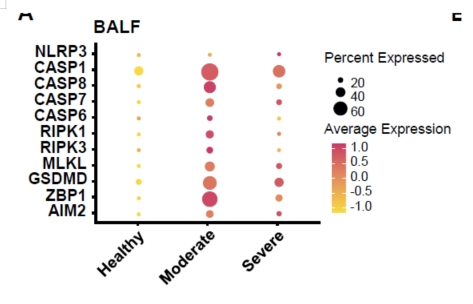

针对去批次之后的结果：DOE20226213_瞿介明_姜艳山老师_20230506-去批次\MNN_Clustering
1. 分别针对NC/LOW/HIGH各做一个dotplot图，横坐标cluster1-8，纵坐标附件sheet1基因，3张

2. NC/LOW/HIGH分别做相关性图，横坐标：CD69的表达量；纵坐标附件sheet4的list【4个list】,3组 x 4 list=14张

#工作路径
/public/scRNA_works/works/liuxuan/Project/conjoint/DOE20226213_Mouse/houxu20230728
# 去批次结果
/public/scRNA_works/works/liuxuan/Project/conjoint/DOE20226213_Mouse/houxu20230506/MNN/seurat.h5seurat
#先转rds
module load OESingleCell/3.0.d && Rscript /public/scRNA_works/works/intern/pengjiale/project/scVDJ/DOE202211197-b5/scrna_pipeline/scripts/R/v4tov3.r -i /public/scRNA_works/works/liuxuan/Project/conjoint/DOE20226213_Mouse/houxu20230506/MNN/seurat.h5seurat -f h5seurat -o ./rds && module unload OESingleCell/3.0.d && module load OESingleCell/2.0.0 && Rscript /public/scRNA_works/works/intern/pengjiale/project/scVDJ/DOE202211197-b5/scrna_pipeline/scripts/R/v4tov3.r -o ./rds
1. 分别针对NC/LOW/HIGH各做一个dotplot图，横坐标cluster1-8，纵坐标附件sheet1基因，3张
seurat_ob = readRDS("/public/scRNA_works/works/liuxuan/Project/conjoint/DOE20226213_Mouse/houxu20230728/rds/data_ob_v3.rds")
setwd("/public/scRNA_works/works/liuxuan/Project/conjoint/DOE20226213_Mouse/houxu20230728/group")
for (i in unique(seurat_ob@meta.data$group)){
print(i)
subset_data = subset(seurat_ob, group == i)
outfilename = paste0(i,".rds")
saveRDS(subset_data,file = outfilename)
print(paste0("Group",i," Finished"))
}
#R脚本添加coord_flip()
module load OESingleCell/2.0.0
for i in {LOW,HIGH,CON};do
Rscript visualize_markers.R -v /public/scRNA_works/works/liuxuan/Project/conjoint/DOE20226213_Mouse/houxu20230728/group/$i.rds -x /public/scRNA_works/works/liuxuan/Project/conjoint/DOE20226213_Mouse/houxu20230728/sheet1.txt -o $i -m dotplot -s 0 -e RNA -g clusters --reduct tsne
done
2. NC/LOW/HIGH分别做相关性图，横坐标：CD69的表达量；纵坐标附件sheet4的list【4个list】,3组 x 4 list=14张
#先做打分
module purge && module load OESingleCell/2.0.0
for i in {LOW,HIGH,CON};do
mkdir $i
for j in {Pyroptosis,Necroptosis,Ferroptosis,Apoptosis};do
Rscript /home/luyao/10X_scRNAseq_v3/src/Diffexp/visualize_markers.R -v /public/scRNA_works/works/liuxuan/Project/conjoint/DOE20226213_Mouse/houxu20230728/group/$i.rds -x /public/scRNA_works/works/liuxuan/Project/conjoint/DOE20226213_Mouse/houxu20230728/$j.txt -o $i/$j -m geneset -s 0 -e RNA -g clusters --reduct tsne
done
done
#相关性图参考美云脚本，修改配色啥的
/public/scRNA_works/works/lumeiyun/project/scRNA/DOE20228053-pig/houxu20221219/run.r
##分析脚本
setwd("/public/scRNA_works/works/liuxuan/Project/conjoint/DOE20226213_Mouse/houxu20230728/2.Plot")
sample = c("LOW","HIGH","CON")
geneset = c("Pyroptosis","Necroptosis","Ferroptosis","Apoptosis")
for (i in sample){
dir.create(paste0("/public/scRNA_works/works/liuxuan/Project/conjoint/DOE20226213_Mouse/houxu20230728/2.Plot/",i,sep = ""))
rds_path = paste0("/public/scRNA_works/works/liuxuan/Project/conjoint/DOE20226213_Mouse/houxu20230728/group/",i,".rds",sep = "")
seurat_ob = readRDS(rds_path)
data = FetchData(seurat_ob, vars =c("rawbc","Cd69"))
for (j in geneset){
dir.create(paste0("/public/scRNA_works/works/liuxuan/Project/conjoint/DOE20226213_Mouse/houxu20230728/2.Plot/",i,"/",j,sep = ""))
df = read.delim(paste0("/public/scRNA_works/works/liuxuan/Project/conjoint/DOE20226213_Mouse/houxu20230728/Addmodulescore/",i,"/",j,"/geneset_visualization/geneset.addmodeulescore.xls",sep = ""))
plot_df = df %>% left_join(data, by = c("Barcode" = "rawbc"))
p <- ggplot(plot_df ,aes(Cd69,extra))+
theme_bw()+theme(panel.grid = element_blank())+
theme(axis.title.x = element_text(size = 14),axis.title.y = element_text(size = 14), axis.text.x = element_text(color="black",face = "bold") , axis.text.y = element_text(color="black") )+ xlab("Cd69")+ylab(j)+geom_point(cex=1,color="#F7D849")+ geom_smooth(se=TRUE,color = "#F7D849",size=1,method="lm",fill = "#F7D849")+stat_cor(data=plot_df, method = "pearson")
ggsave(paste0("/public/scRNA_works/works/liuxuan/Project/conjoint/DOE20226213_Mouse/houxu20230728/2.Plot/",i,"/",j,"/Plot.png",sep = ""),p)
ggsave(paste0("/public/scRNA_works/works/liuxuan/Project/conjoint/DOE20226213_Mouse/houxu20230728/2.Plot/",i,"/",j,"/Plot.pdf",sep = ""),p)
write.table(plot_df, quote = F,sep =",",row.names = F,paste0("/public/scRNA_works/works/liuxuan/Project/conjoint/DOE20226213_Mouse/houxu20230728/2.Plot/",i,"/",j,"/data.csv",sep = ""))
}
}
#############绘图测试脚本
seurat_ob = readRDS("/public/scRNA_works/works/liuxuan/Project/conjoint/DOE20226213_Mouse/houxu20230728/group/LOW.rds")
data = FetchData(seurat_ob, vars =c("rawbc","Cd69"))
df = read.delim("/public/scRNA_works/works/liuxuan/Project/conjoint/DOE20226213_Mouse/houxu20230728/Addmodulescore/LOW/Necroptosis/geneset_visualization/geneset.addmodeulescore.xls")
plot_df = df %>% left_join(data, by = c("Barcode" = "rawbc"))
library(reshape2)
library(ggpubr)
library(Seurat)
library(ggplot2)
library(dplyr)
library(tibble)
require("ggrepel")
library(ggpubr)
library(ggpubr)
j = "Necroptosis"
p <- ggplot(plot_df ,aes(Cd69,extra))+
theme_bw()+theme(panel.grid = element_blank())+
theme(axis.title.x = element_text(size = 14),axis.title.y = element_text(size = 14), axis.text.x = element_text(color="black",face = "bold") , axis.text.y = element_text(color="black") )+ xlab("Cd69")+ylab(j)+geom_point(cex=1,color="#F7D849")+ geom_smooth(se=TRUE,color = "#F7D849",size=1,method="lm",fill = "#F7D849")+stat_cor(data=plot_df, method = "pearson")
ggsave("test.png",p)